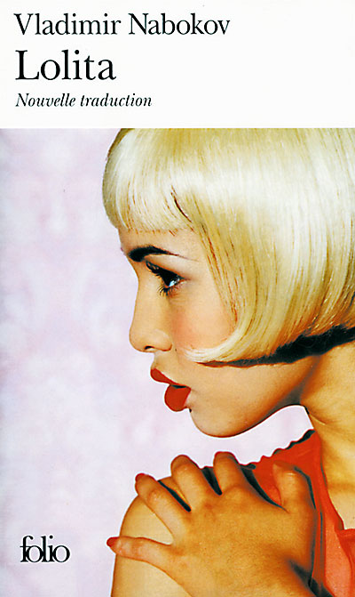
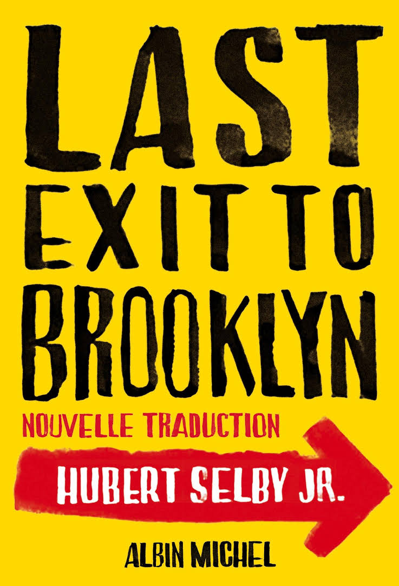

|  | LolitaHumbert Humbert - scholar, aesthete and romantic - has fallen completely and utterly in love with Lolita Haze, his landlady's gum-snapping, silky skinned twelve-year-old daughter. Reluctantly agreeing to marry Mrs Haze just to be close to Lolita, Humbert suffers greatly in the pursuit of romance; but when Lo herself starts looking for attention elsewhere, he will carry her off on a desperate cross-country misadventure, all in the name of Love. Hilarious, flamboyant, heart-breaking and full of ingenious word play, Lolita is an immaculate, unforgettable masterpiece of obsession, delusion and lust. |
Les Trois MousquetairesThe Three Musketeers is a French historical novel by Alexandre Dumas.Set in 1625–1628, it recounts the adventures of a young man named d'Artagnan (based on Charles de Batz-Castelmore d'Artagnan) after he leaves home to travel to Paris, to join the Musketeers of the Guard. Although D'Artagnan is not able to join this elite corps immediately, he befriends the three most formidable musketeers of the age: Athos, Porthos and Aramis and gets involved in affairs of the state and court. |
|
|  | Last Exit To BrooklynLast Exit to Brooklyn is a raw depiction of life amongst New York's junkies, hustlers, drag queens and prostitutes. An unforgettable cast of characters inhabits the housing projects, bars and streets of Brooklyn: Georgette, a hopelessly romantic and tormented transvestite; Vinnie, a disaffected and volatile youth who has never been on the right side of the law; Tralala, who can find no escape from her loveless existence; Harry, a power-hungry strike leader with a fatal secret. Living on the edge, always walking on the wild side, their alienation and aggression mask a desperate, deep human need for affection and kinship.Banned in Britain on first publication in 1964, Last Exit to Brooklyn brought its ex-marine, drug-addict author instant notoriety. Its truthfulness stunned a generation and continues to shock to this day. |
This page has been coded during the FullStack program @LeWagon.